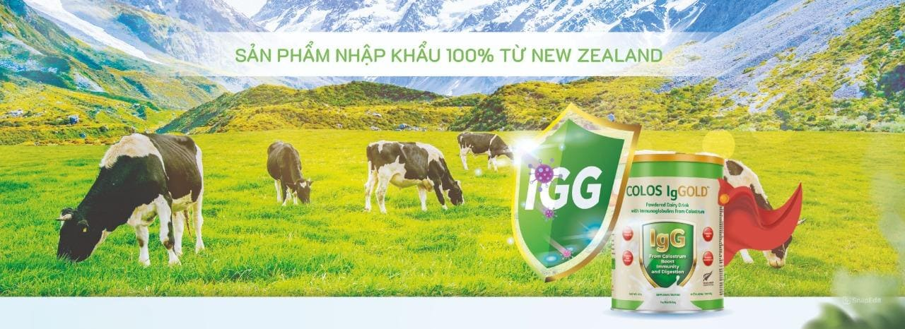

Thực phẩm bổ sung New Zealand và Sữa non tăng cường miễn dịch Colos Iggold – Giải pháp vàng tăng sức đề kháng
Trong bối cảnh môi trường và thực phẩm ngày càng gây ảnh hưởng đến hệ miễn dịch, nhu cầu tìm kiếm những sản phẩm chăm sóc sức khỏe chất lượng, an toàn và có nguồn gốc rõ ràng đang gia tăng mạnh mẽ. Đặc biệt, thực phẩm bổ sung New Zealand nổi lên như biểu tượng của sự an toàn và hiệu quả vượt trội, đi kèm với đó là sữa non tăng cường miễn dịch Colos Iggold – một trong những sản phẩm tiêu biểu được người tiêu dùng Việt Nam đánh giá cao.
Vì sao thực phẩm bổ sung New Zealand được ưa chuộng?
New Zealand là quốc gia nổi tiếng với môi trường trong lành, nền nông nghiệp sạch và hệ thống kiểm soát chất lượng nghiêm ngặt. Các thực phẩm bổ sung New Zealand luôn được sản xuất theo tiêu chuẩn quốc tế, sử dụng nguyên liệu hữu cơ hoặc không biến đổi gen (non-GMO), đảm bảo độ tinh khiết tối đa cho người sử dụng.
Không chỉ nổi bật bởi yếu tố an toàn, thực phẩm bổ sung New Zealand còn được đánh giá cao về tính hiệu quả. Nhiều sản phẩm có tác dụng tích cực lên hệ miễn dịch, tiêu hóa, xương khớp và sức khỏe tổng thể. Trong số đó, sữa non tăng cường miễn dịch Colos Iggold là lựa chọn lý tưởng cho trẻ nhỏ, người cao tuổi và người có hệ miễn dịch yếu.
Giới thiệu về Sữa non tăng cường miễn dịch Colos Iggold
Sữa non tăng cường miễn dịch Colos Iggold là sản phẩm nhập khẩu chính ngạch từ New Zealand – nơi nổi tiếng về chất lượng sữa hàng đầu thế giới. Với công thức đặc biệt chứa hàm lượng cao kháng thể tự nhiên IgG, sản phẩm giúp tăng cường hệ miễn dịch và hỗ trợ sự phát triển toàn diện cho người sử dụng.
Được sản xuất với dây chuyền công nghệ hiện đại, sữa non tăng cường miễn dịch Colos Iggold không chỉ giữ lại giá trị dinh dưỡng vốn có của sữa non, mà còn bổ sung thêm vitamin D3, K2, chất xơ hòa tan FOS và khoáng chất như kẽm, canxi – giúp hỗ trợ tiêu hóa, cải thiện chiều cao và giảm nguy cơ mắc bệnh.

Thành phần nổi bật của Colos Iggold
- IgG (Immunoglobulin G): Kháng thể tự nhiên giúp chống lại virus, vi khuẩn và tăng cường miễn dịch hiệu quả.
- Canxi nano, vitamin D3, K2: Hỗ trợ phát triển chiều cao và chắc xương, đặc biệt phù hợp với trẻ em và người lớn tuổi.
- Chất xơ hòa tan FOS: Tăng cường lợi khuẩn đường ruột, hỗ trợ tiêu hóa khỏe mạnh.
- Vitamin & khoáng chất thiết yếu: Bổ sung dưỡng chất đầy đủ cho cơ thể khỏe mạnh mỗi ngày.
Đối tượng nên sử dụng Colos Iggold
Sữa non tăng cường miễn dịch Colos Iggold phù hợp với nhiều đối tượng:
- Trẻ em hay ốm vặt, có sức đề kháng kém
- Người cao tuổi cần tăng cường miễn dịch và hỗ trợ xương khớp
- Phụ nữ sau sinh, người đang phục hồi sức khỏe
- Người thường xuyên mệt mỏi, ăn uống kém
Lợi ích vượt trội khi kết hợp thực phẩm bổ sung New Zealand và Colos Iggold
Việc lựa chọn thực phẩm bổ sung New Zealand và đặc biệt là sữa non tăng cường miễn dịch Colos Iggold mang lại những lợi ích rõ rệt như:
- Tăng cường miễn dịch tự nhiên, phòng ngừa bệnh vặt
- Cải thiện tiêu hóa và giúp ăn ngon miệng hơn
- Hỗ trợ phát triển chiều cao cho trẻ em
- Bổ sung dinh dưỡng cho người cần phục hồi sức khỏe
- Giảm nguy cơ loãng xương, xơ vữa động mạch
Cách sử dụng Colos Iggold hiệu quả
Để đạt hiệu quả tối ưu, nên sử dụng sữa non tăng cường miễn dịch Colos Iggold theo hướng dẫn:
- Trẻ em từ 1 tuổi: 1–2 lần/ngày, mỗi lần 2 muỗng pha với 150ml nước ấm
- Người lớn: 2 lần/ngày, mỗi lần 3 muỗng
- Nên dùng khi bụng đói hoặc giữa các bữa ăn để tăng khả năng hấp thu
Cam kết chất lượng từ New Zealand
Tất cả các sản phẩm thực phẩm bổ sung New Zealand đều phải trải qua quy trình kiểm định nghiêm ngặt từ nguyên liệu đầu vào đến thành phẩm đóng gói. Sữa non tăng cường miễn dịch Colos Iggold cũng không ngoại lệ – với quy trình sản xuất tuân thủ tiêu chuẩn GMP, không chất bảo quản, không phẩm màu, an toàn tuyệt đối cho người sử dụng.
Kết luận: Giải pháp toàn diện từ thiên nhiên
Giữa muôn vàn lựa chọn trên thị trường, thực phẩm bổ sung New Zealand vẫn luôn giữ vững niềm tin nơi người tiêu dùng Việt nhờ vào chất lượng và sự an toàn. Trong đó, sữa non tăng cường miễn dịch Colos Iggold chính là đại diện tiêu biểu – mang lại giải pháp tối ưu cho hệ miễn dịch khỏe mạnh và sự phát triển toàn diện cho cả trẻ nhỏ và người lớn tuổi.
Hãy lựa chọn những sản phẩm chất lượng từ New Zealand để bảo vệ sức khỏe gia đình bạn từ hôm nay!
>>- Các bài viết liên quan